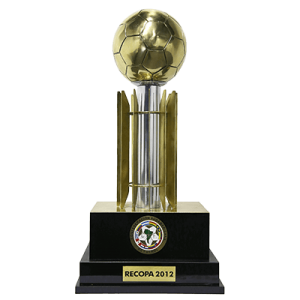
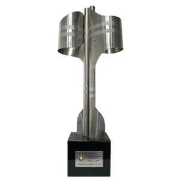
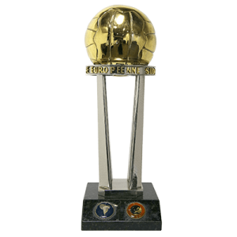
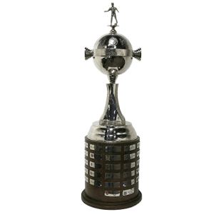
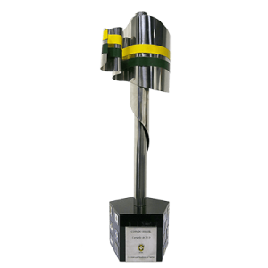
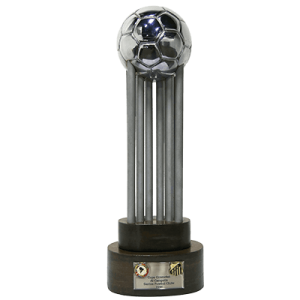

O Santos Futebol Clube (popularmente conhecido como Santos) é um clube poliesportivo brasileiro da cidade de
Santos, litoral do estado de São Paulo. Fundado em 14 de abril de 1912, suas cores são o branco e o preto.
O Santos tornou-se no futebol um dos clubes mais bem-sucedidos do Brasil e reconhecidos mundialmente. Ficou
famoso na década de 60 pelos vários títulos internacionais e nacionais conquistados e por ter revelado Pelé,
considerado o melhor jogador do século pela FIFA e também o maior artilheiro da história do Santos e da Seleção
Brasileira. Manda as suas partidas em seu próprio estádio, a Vila Belmiro, mas ocasionalmente desloca seus
jogos ao Pacaembu. Seus maiores rivais no futebol são o Corinthians, o Palmeiras e o São Paulo.
Ao longo de sua história, o Santos conquistou um grande número de títulos internacionais, com destaque para os
Mundiais de 1962 e 1963, as Copas Libertadores de 1962, 1963 e 2011 (recordista brasileiro ao lado de Grêmio e São
Paulo), a Copa Conmebol de 1998, a Supercopa dos Campeões Intercontinentais de 1968, a Supercopa Sul-Americana de
1968 e a Recopa Sul-Americana de 2012. No cenário nacional é octacampeão brasileiro, somando cinco Taças Brasil
conquistadas consecutivamente de 1961 a 1965, o Torneio Roberto Gomes Pedrosa de 1968 e os Campeonatos Brasileiros
de 2002 e 2004. Ainda no âmbito nacional, o clube possui uma Copa do Brasil vencida em 2010, totalizando nove
conquistas nacionais. Outros títulos importantes incluem cinco Torneios Rio-São Paulo e 22 Campeonatos Paulistas,
tornando-se o maior campeão desde a profissionalização desta competição. Ao todo, somando competições oficiais,
amistosas e outras taças, o clube possui 305 conquistas.
O Santos foi eleito pela FIFA em 2000, o quinto maior clube de futebol do Século XX, sendo o melhor clube das
Américas na lista e também recebeu no ano de seu centenário na câmara dos deputados em Brasília pela FIFA, o
prêmio de "maior clube sul-americano do Século XX", o Santos também é um dos quatro clubes do país que nunca
foram rebaixados para a segunda divisão, além de ser o clube brasileiro que mais enfrentou estrangeiros na
história. É também o único clube brasileiro a ser campeão estadual, nacional, continental e mundial no mesmo
ano, em 1962, e o primeiro e único a conquistar a tríplice artilharia no futebol brasileiro: estadual, brasileiro
e copa do Brasil. Outro feito único do clube é ser o que mais marcou gols na história do futebol mundial,
tendo sido o primeiro a alcançar a marca de 12 mil gols.
 Torneios Rio – São Paulo
Torneios Rio – São Paulo

Torneios Rio – São Paulo

Torneios Rio – São Paulo
Torneios Rio – São Paulo

Torneios Rio – São Paulo

Torneios Rio – São Paulo

Torneios Rio – São Paulo

Torneios Rio – São Paulo
Torneios Rio – São Paulo